常州太湖湾音乐节
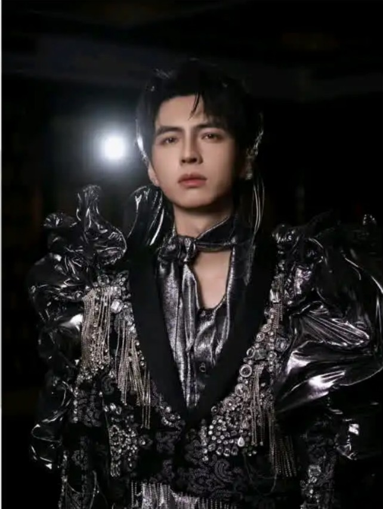
星际战争中防御等级最高的铠用,因此这一套造型叫星际玫瑰。
无锡太湖音乐节
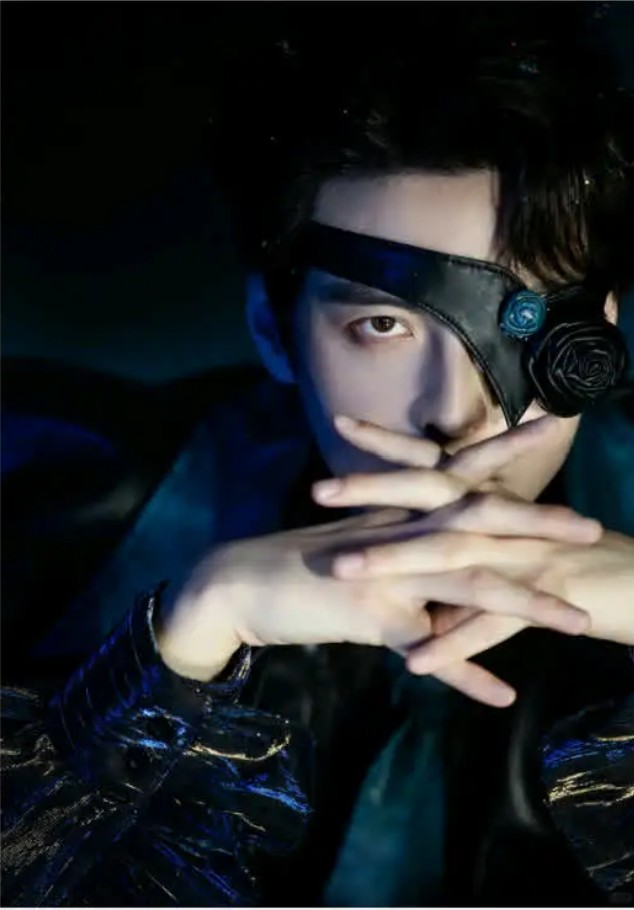
银河系中心有家神秘酒吧,如果你下次去那里喝酒,记得点一杯草莓朗姆酒,挂我的账上
湖州莫干山奇幻音乐节
客人问:“这杯酒叫什么?”
——“银河系中心。”
“哇哦,这可太有趣了,我的伙计,给我来上一杯,多少钱?"
——“喔我尊贵的客人,这杯酒不卖钱的。”
“那卖什么?”
——“以物易物。”
“喔~这么传统?我喜欢。那您需要我的什么呢?”
——“一把枪。”
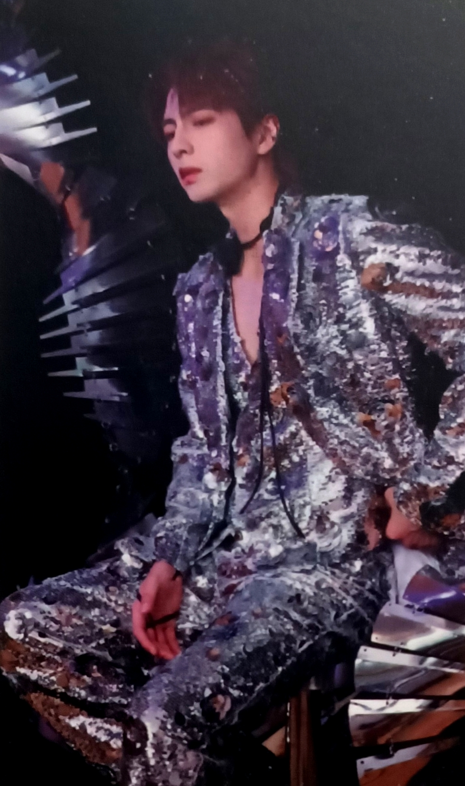
南昌爱玛追星音乐节
银河系的某个儿童节,师父送了他一对水系魔法附魔的蓝黑双枪:“关于你是谁,双枪会告诉你答案。”
扬州枣林湾音乐节
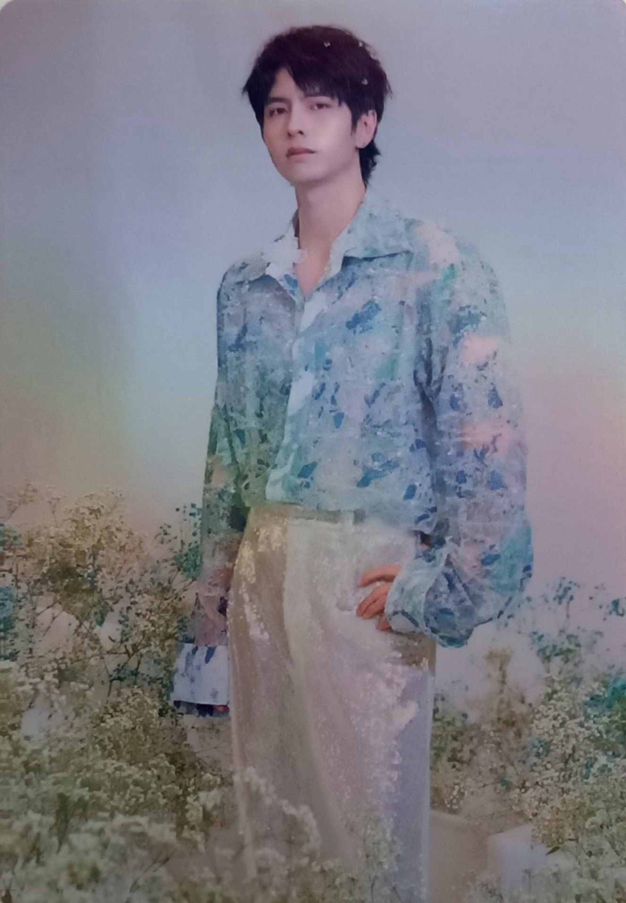
今晚银河系中心酒吧全场免费,祝大家七夕快乐,满饮手中杯。
深圳海山日月音乐节
直到,一次永夜来临,银河系中心酒吧再次开门,新消息立刻传往宇宙各个消息流转站——调酒师的头发从红色变成了紫色!众组织惊骇。
某位文明学院的资深研究员曾发表过自己的观点:如果说红色能燃烧行星,那么紫色或许可以加速恒星的覆灭。然截止目前,仍没有组织派出人手试探过紫色的幽冥火焰能发挥的最大威力。
长春银河左岸音乐节
——骚你个头，这叫星际猎手之亮闪闪灵羽飞翼之月神形态!
2025南京生日会
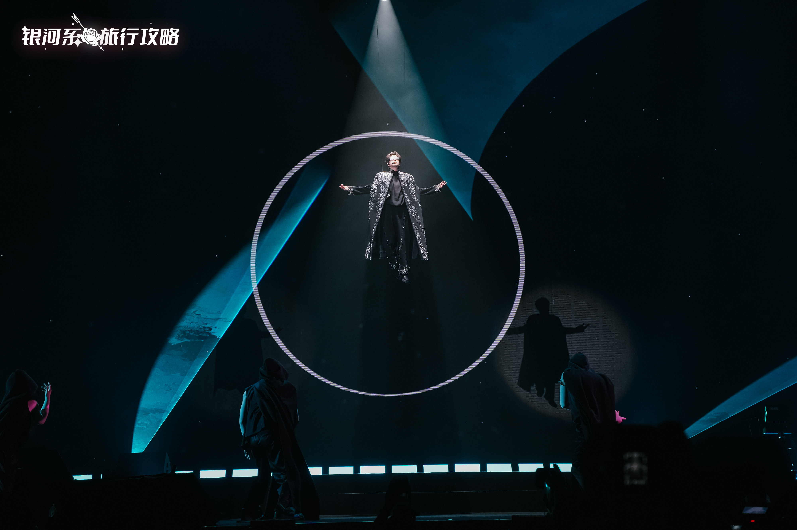
一秒用来恐惧我的弓，
一秒用来怀念你的神，
最后一秒……
请思考为什么你的死亡倒影，
比你的生平更像我年轻时的样子。」
他拉满弓弦，火焰在箭镞凝成玫瑰星云。
「看，你的心跳轨迹多像濒死星体的脉冲——
精准，优雅，且毫无意义。
让我替你按下静音键吧……
毕竟宇宙的BGM，
只需要我的呼吸节拍。」
星际猎手队长，请勿直呼吾名。
2025南京生日会
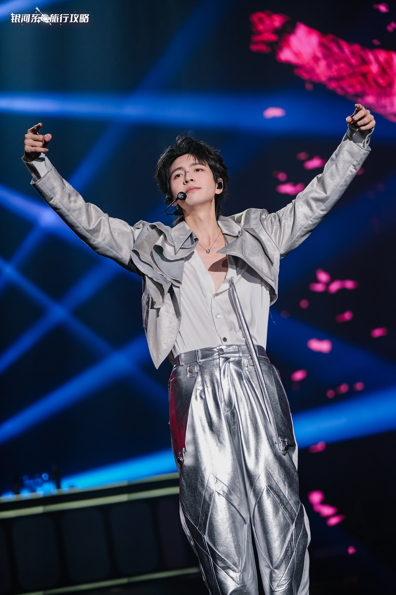
这场银河系旅行攻略演唱会对于我来说，是今年又做到了，去年的自己不敢想象的事情。
对于做巡演这件事，我有一些特别的野心，是属于小说家的野心。我希望它不仅是我音乐作品的演唱，还可以是一个完整主题下的叙事性的表达。所以这一次我们给大部分自己的歌都做了新的live版编曲，给20首歌做了全套新vj，还写了星际猎手人物故事的新片段。
我想提前做好更多事，让到场的朋友们不仅能享受到音乐演出的现场感，也能从各个其他维度感受到我巡演的个人表达，从世界观、故事线、人物的弧光、星际猎手的宿命以及对宿命的对抗、他们和命运掰手腕的勇气、对自己原则的捍卫等等……这一次准备的还不够完美，但我做到了尽力之下的百分之百，希望大家可以在未来巡演的完整叙事里继续去感受我想表达的一切。
2025南京生日会

“此处沉睡着全宇宙最精准的误差——他射出的最后一颗子弹，是替死神请假的申请书。”
常州太湖湾音乐节
银河系酒吧一周年生日快乐！

银河系旅行攻略-北京站
银河系旅行攻略-北京站
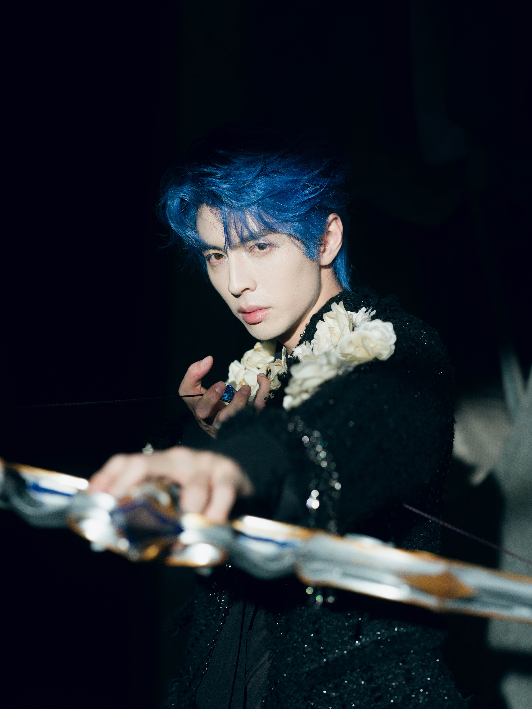
他在想：如果那家伙还活着，如果他的核心导航模块没被彻底烧毁……也许这个熟悉又陌生的信号，能穿透混乱的宇宙星尘，成为他回家的灯塔？
家，不应该仅是精神性的指称名词，还是应该像很久以前一样，拥有纯物理意义上的对应存在。
烬行知道，只有真正的家，才有可能等来一个可能已迷失在数据深渊的灵魂。
银河系旅行攻略-北京站
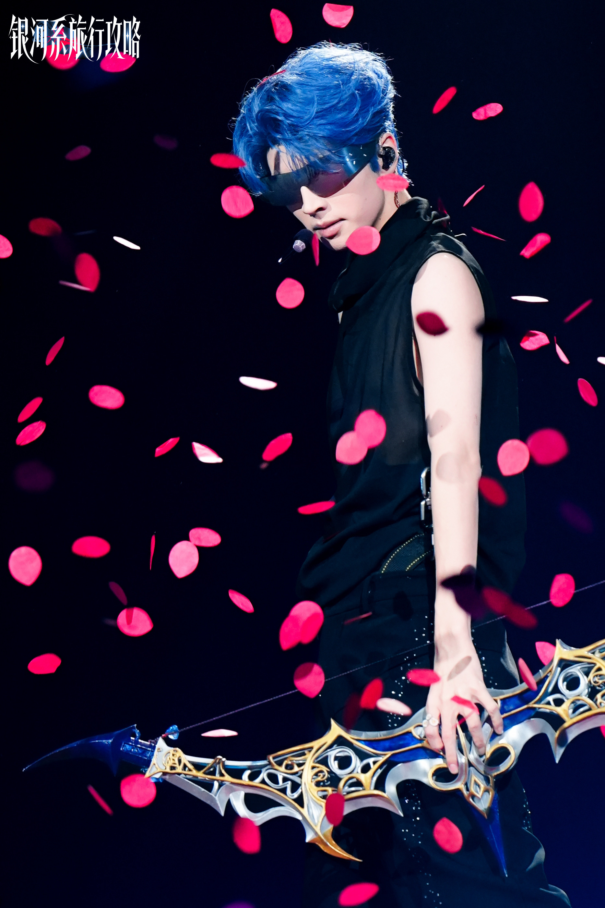
赐我勇气，去改变我所能改变的一切；
并赐我智慧，去分辨两者的不同。”
“而我将继续寻找，就算这无尽的星辰，令我寻找的希望渺茫，就算我将单枪匹马。”
银河系旅行攻略-北京站
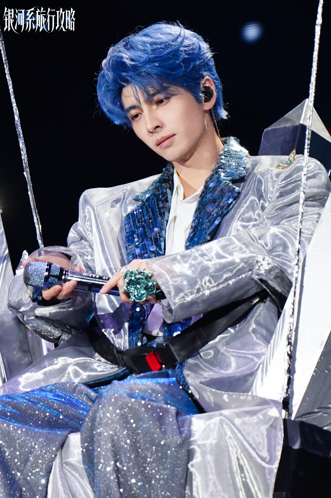
“不会。数据云只有逻辑风暴和垃圾信息洪流。”
“哦……那挺没劲的……那如果是我死了呢？”
“你的副本注销了。死了就是真空，没云，没雨，”烬行递给赛博恩一瓶开口的啤酒罐，“所以，别死。账单还没清。亲兄弟明算账。”
“真**会催债。”
银河系旅行攻略-北京站
银河系旅行攻略-北京站
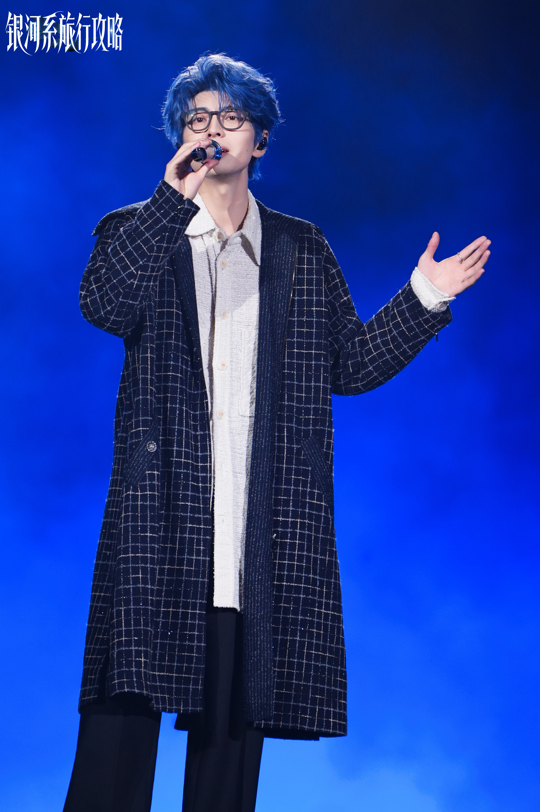
烬行：你的字。
赛博恩：哦，替你写的——当年某个混蛋经常说“活着没意义”。
银河系旅行攻略-长沙站
银河系旅行攻略-长沙站
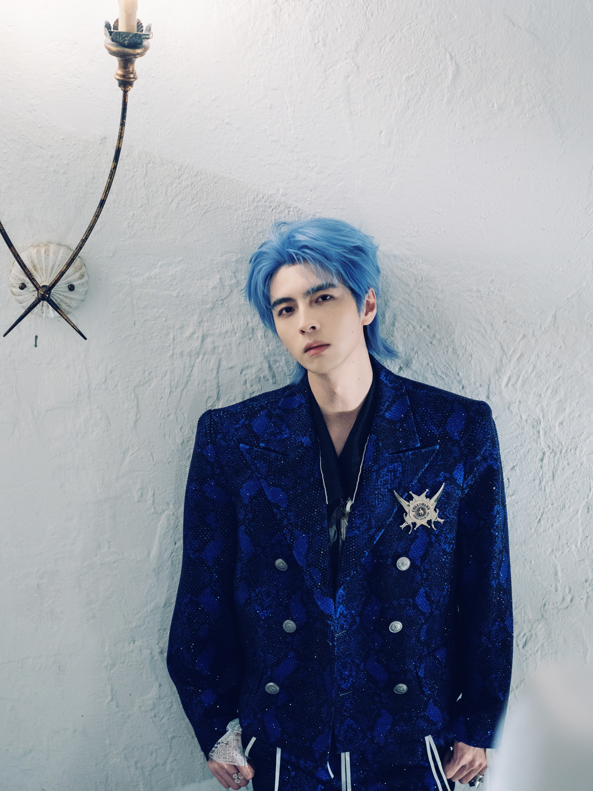
“要试试吗？”
🏹🌹
“piu——”ps:啊！我的心被什么东西击中了
原来是队长的爱
银河系旅行攻略-长沙站
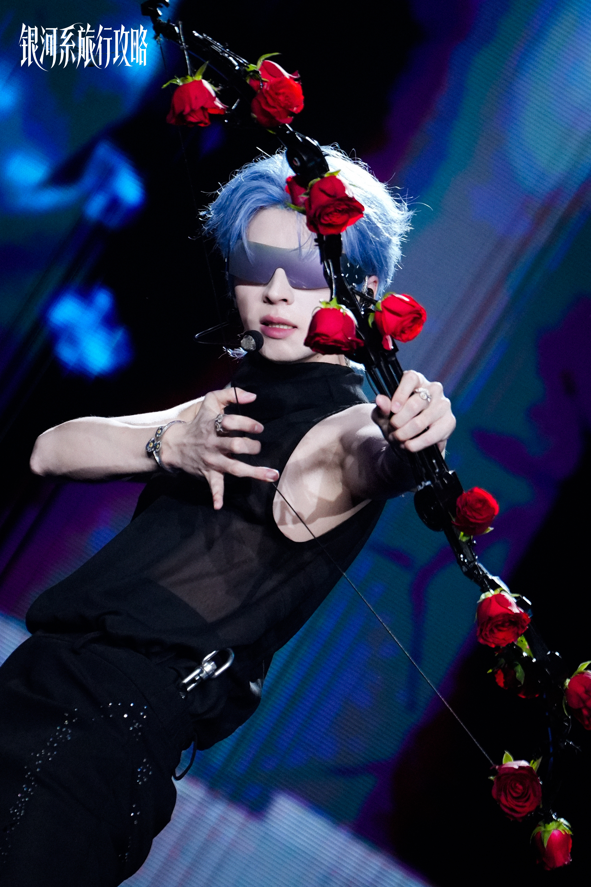
银河系旅行攻略-长沙站
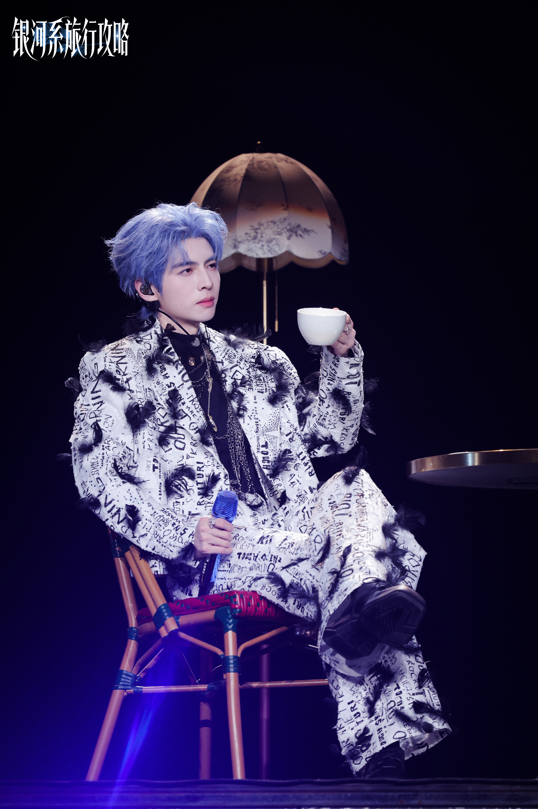
银河系旅行攻略-长沙站
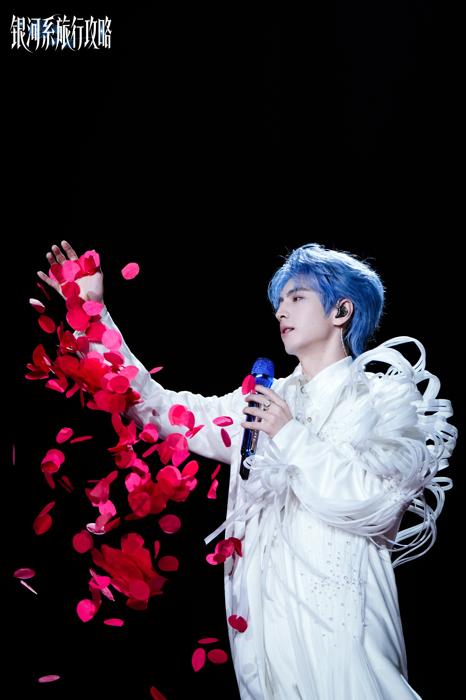
银河系旅行攻略-长沙站
而我们中无人询问，它究竟通向何方。
银河系旅行攻略-长沙站
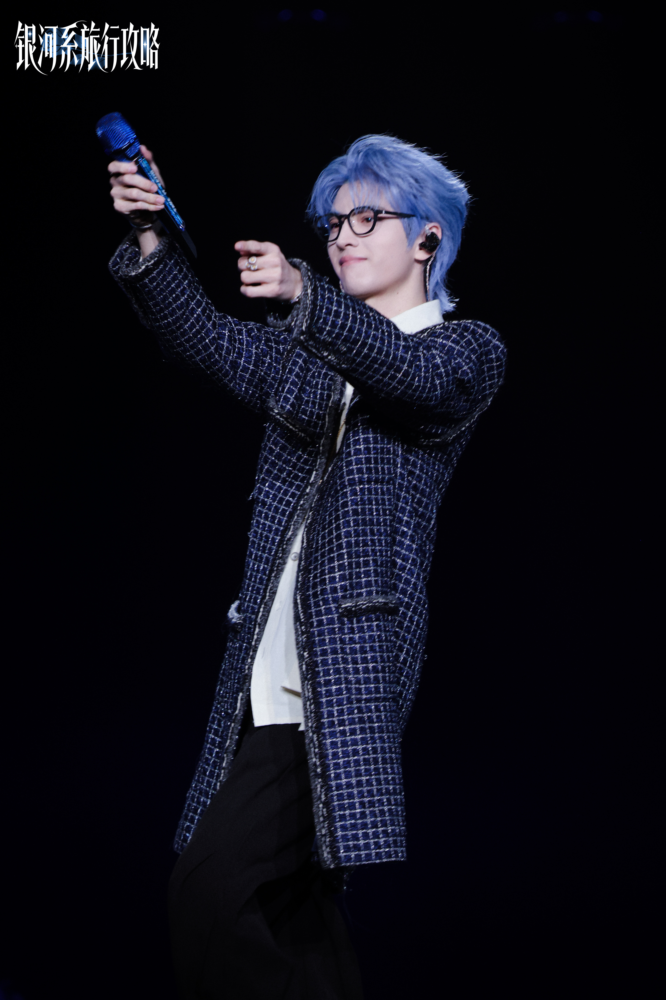
2026新年快乐！
银河系旅行攻略-上海站
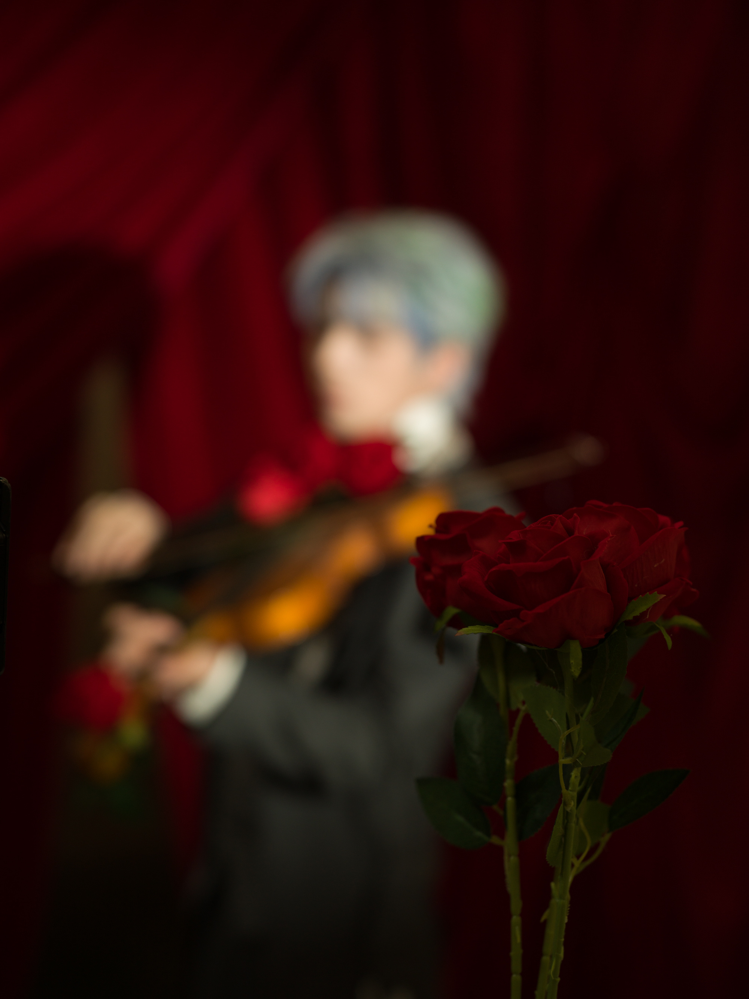
身影留在每一片叶子上。
梅雨季来临，
铃兰摇响多年后的背囊。
那支他寻觅已久的绿意，
原来是他放走的。
明天后天见！ps:对意识流又爱又恨 ·w·
银河系旅行攻略-上海站
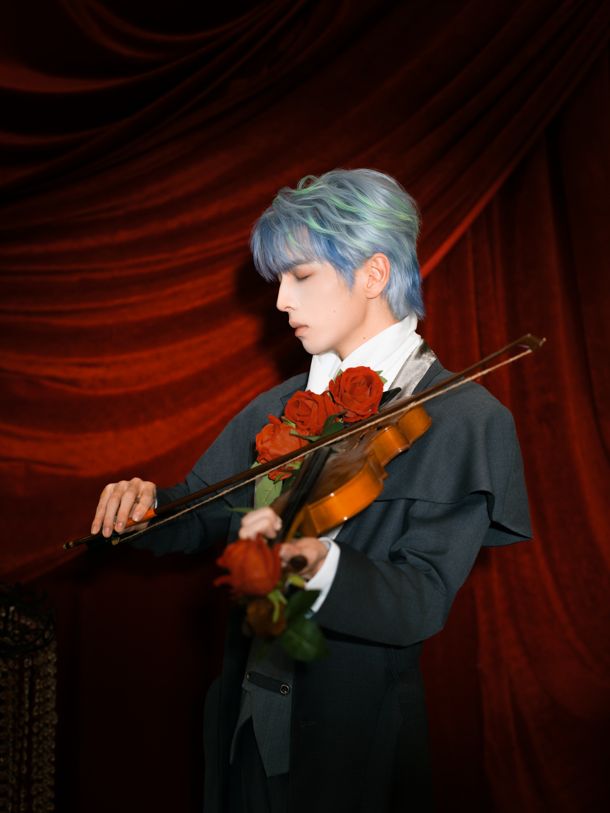
赛博恩：“这是什么?”
烬行：“房租。”
赛博恩：“我住你酒吧仓库还要交房租？”
烬行：“水电费。”
赛博恩：“我自己发的电!”
烬行：“那交水费。”
赛博恩：“我可以不喝水。”
烬行：“那你不洗澡？”
赛博恩：“......洗。” ps:义体人洗澡零件会生锈吗？
银河系旅行攻略-上海站
烬行：“你是剑客。”
斯沃德：“我想学新技能！”
烬行递给他一把弓。斯沃德拉满，弓飞向了远方。
烬行：“天赋异禀。”
斯沃德：“……这是夸奖吗？”ps:重新定义弓的攻击方式
银河系旅行攻略-上海站
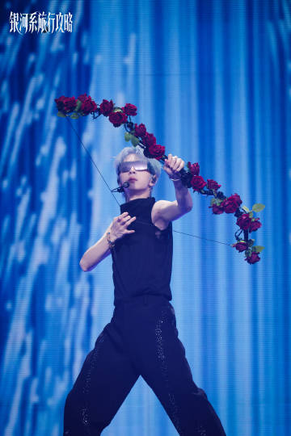
谶：“擦杯子很快。”
斯沃德：“……不是战斗吗？”
谶：“战斗的时候他只射一箭。擦杯子要擦一晚上。所以擦杯子更厉害。”
斯沃德：“你说得好像有道理。” ps:全自动洗杯机器 广告招租
银河系旅行攻略-上海站
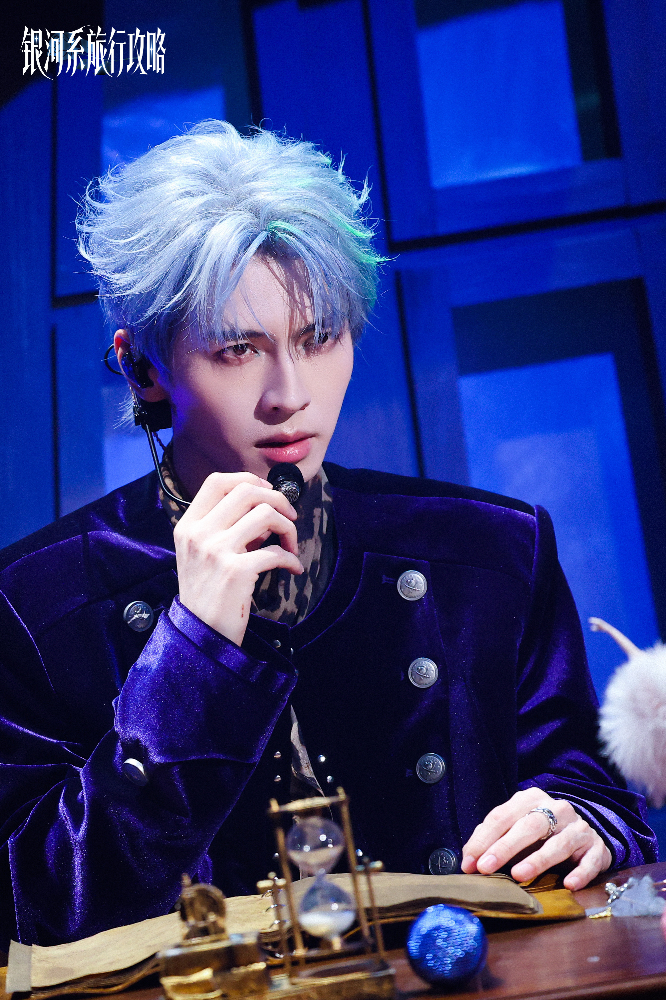
斯沃德：“它是不是在笑？”
烬行：“嗯。这是最高级的版本，自带情绪模块。”
斯沃德：“那它很喜欢我？”
烬行：“喜欢你的毛。” ps:换了个次元也会为猫咪掉毛头疼
银河系旅行攻略-上海站
他在蕨丛里遇见铃兰精灵。
他正用花瓣包扎一株受伤的贯众，
指尖滴着清晨的露。
他把弓箭藏在背后，
他却说：我认得你。
在你出生前的某个清晨，
我就见过你拉开这张弓。ps:猎兰故事开始连载了！
Don't try to understand it. Feel it.
银河系旅行攻略-上海站
烬行回复一个字：“忙。”
赛博恩又发十三条。
烬行回复：“再发拉黑。”
赛博恩安静了十秒，发了个“哥”。
烬行：“说。”
赛博恩：“注意安全。”
烬行没回。
但当天晚上，赛博恩的账户收到一笔转账，备注写：“买。”ps:知弟者，非哥莫属
银河系旅行攻略-上海站
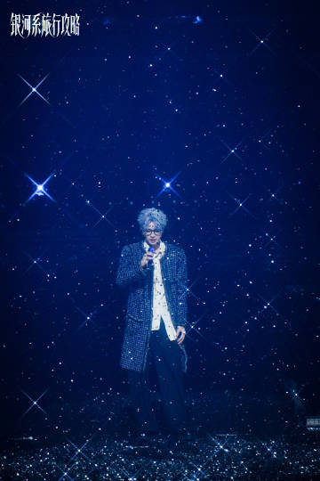
全员围在现场。
斯沃德：“不是我，我今天没做饭。”
赛博恩：“也不是我，我今天吃的外卖。”
塔拉撒里昂：“本王从不进厨房。”
谶：“我不用吃饭。”
铃兰：“我还没吃饭。”
烬行站在门口，看着锅底的黑色残渣：“锅是我买的。但火是谁开的？”
全员沉默。
度漪弱弱举手：“……我煮泡面，然后去上了个厕所。”
烬行：“值日加一周。” ps:烬行：没一个省心的（头疼